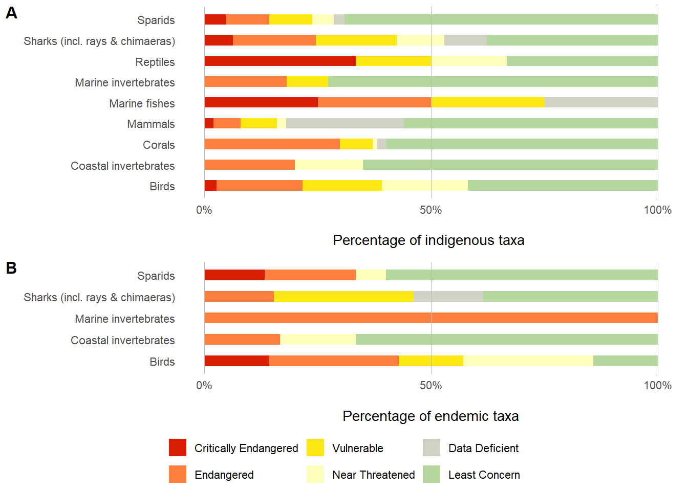
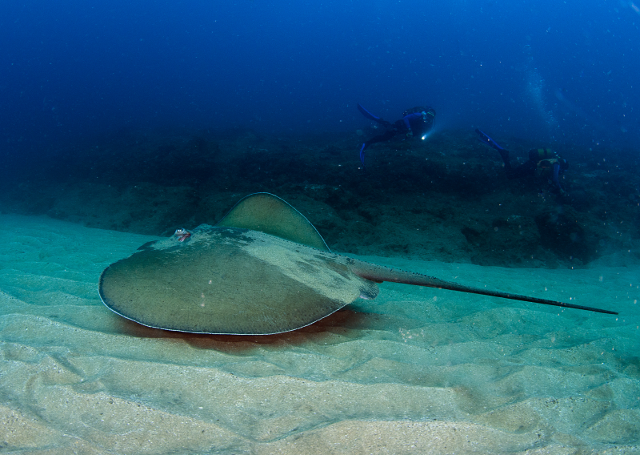
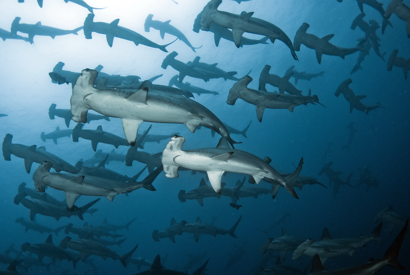
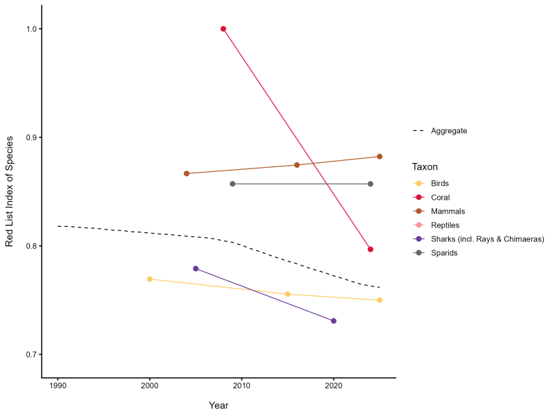
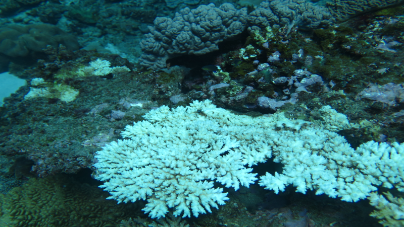
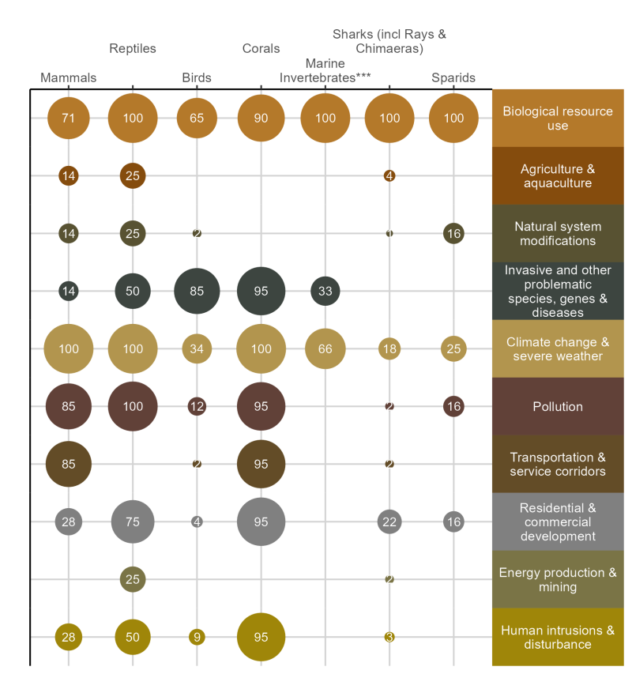
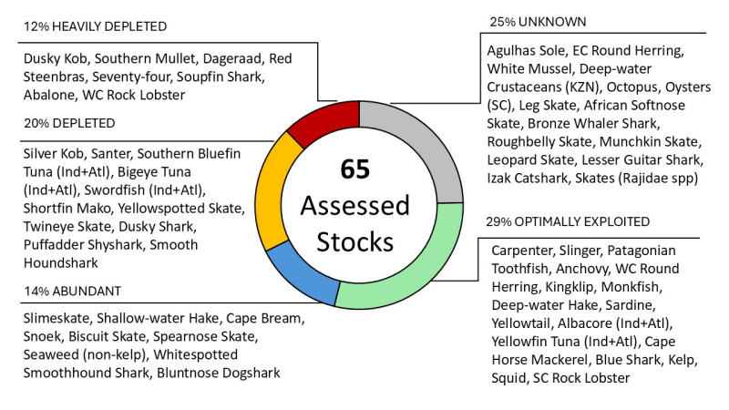

![]()

Globally, South Africa is reported to have the third-highest level of marine species endemism, meaning that the country has a critical role to play in international marine species conservation. Several marine species are faring better in the country than elsewhere in the region. However, marine species have among the highest data deficiency across all realms signalling the need to build foundational knowledge and capacity to support assessment for informed management and decision-making. Of the 506 species assessed using the IUCN Red List; sharks, rays and chimaeras; corals; seabirds and seabreams are among the most threatened species groups.

36%
of 506 taxa assessed are
Threatened
of 506 taxa assessed are
Threatened
32%
of 65 stocks
Depleted or Heavily Depleted
of 65 stocks
Depleted or Heavily Depleted
8%
of 506 taxa assessed are
Data Deficient
of 506 taxa assessed are
Data Deficient
25%
of 65 stocks
Unknown
of 65 stocks
Unknown
Threat status
A total of 506 marine species have been assessed using the IUCN Red List criteria and are included in the NBA, drawing from a combination of national, regional and global assessments. Of these, approximately 36% of taxa are threatened in 2025, while 18% of 376 assessed species were threatened in 2018. This difference is due to the inclusion of additional species (including all sharks, rays and chimaeras, additional corals and selected marine invertebrates), many of which are threatened. However, the high proportion of threatened taxa is not fully representative of the extinction risks at the realm level because there has been a focus on assessing economically important species and groups known to be at risk (such as corals, sharks, rays and chimaeras, rock lobsters and abalone), with few comprehensively assessed marine taxonomic groups leading to an inflation of threat results.
In the marine realm, capacity shortfalls, gaps in taxonomic knowledge, and the lack of information on species distribution, life histories and long-term population trends have led to limited assessments with many groups not evaluated for their risk of extinction. Consequently, ~8% of species were assessed as Data Deficient, the highest among the four realms. Limited assessment efforts signal the need to address knowledge gaps and increase capacity for foundational research on marine species (including taxonomy and strengthened distribution data) and comprehensive IUCN Red List assessments for entire taxonomic groups.
A comprehensive assessment of cartilaginous fishes (i.e. sharks, rays and chimaeras), was included in NBA 2025 drawing from global and national assessments, with this group emerging as one of the most threatened groups across all realms (41% threatened) (Figure 1 A). Many cartilaginous fishes are long-lived, with slow growth and low reproductive output, and are thus inherently vulnerable to fishing. Many cartilaginous species are also wide-ranging and much of their declines can be attributed to poor fisheries management in other regions. However, 42% of South Africa’s endemic sharks, rays and chimaeras are threatened (Figure 1 B), indicating that the country has an important role in reversing declines of these species. Endemic species at highest risk of extinction include the happy eddie (Haploblepharus edwardsi) and twineye skate (Raja miraletus), both assessed as Endangered. Globally and in South Africa, the main threats to sharks are unsustainable fishing as target and bycatch species, and habitat degradation1,2. In South Africa, cartilaginous fishes are caught as target and bycatch species in industrial fisheries, targeted catch in recreational fisheries, and targeted in bather protection shark nets.

Trends - Red List Index
The Red List Index (RLI)3 for top predators such as sharks, shows deteriorating threat status over time (Figure 2). As apex and meso-predators, sharks perform a range of essential ecological functions in marine food webs, including control the populations of their prey, maintaining diversity at lower trophic levels (including commercially fished species) and maintaining functional coastal and marine ecosystems4. Loss of top predators therefore has potential knock-on effects on the livelihoods of fisheries-dependent communities and food security.
The decline in shark populations is a global trend5. Globally, the main threats to sharks are fisheries (as both target catch and bycatch), habitat degradation resulting from coastal development, and probably climate change. As most of South Africa’s 191 shark species have ranges that extend well beyond South African waters, some of the decline in the RLI for South Africa’s sharks reflects fishing pressure and other threats beyond South Africa’s jurisdiction. When national adjustments in threat status are taken into account, the South African RLI is marginally higher and the declining trend is marginally less steep than the global RLI for the same set of species. Nevertheless, 6 of South Africa’s 13 endemic sharks are threatened with global extinction, with their future fully dependent on conservation and fisheries management actions in South Africa.

A total of 10 (24%) of South Africa’s 42 seabreams (sparids) are at risk of extinction with 2 Critically Endangered, 4 Endangered and 4 Vulnerable species (Figure 1 A). The dageraad (Chrysoblephus cristiceps)6 and red steenbras (Petrus rupestris) are Critically Endangered7 with Endangered taxa including seventy-four (Polysteganus undulosus)8, red stumpnose (Chrysoblephus gibbiceps), West coast and white steenbras (Lithognathus aureti and L. lithognathus).
Seabream trends remain relatively stable with some species uplisted and others downlisted (Figure 2). Since the previous assessments in 2009, three seabreams have improved in terms of threat status including the seventy-four (Polysteganus undulosus), from CR to EN, red roman (Chrysoblephus laticeps) from NT to LC and carpenter (Argyrozona argyrozona) from NT to LC. Effective fisheries management measures and marine protected areas (MPAs) have supported recovery of some of these linefish. Two taxa became more threatened, the red steenbras (Petrus rupestrus), from EN to CR and the West coast steenbras (Lithognathus auretti), from NT to EN. Overfishing by recreational fisheries are a particular concern for these two species.
South African kob species (Argyrosomus) genus—including dusky, silver, squaretail, and west-coast dusky kob—are highly valued food fish targeted by recreational, commercial and small-scale fishers, and are also caught as trawl bycatch. Once abundant, the populations of dusky kob (Argyrosomus japonicus), silver kob (Argyrosomus inodorus) and squaretail kob (Argyrosomus thorpei) have collapsed, largely due to a long history of overexploitation and habitat degradation. Dusky kob has been nationally assessed as Critically Endangered, and the assessment is being finalised, whilst squaretail and silver kob have been assessed as Endangered and Vulnerable respectively9.
These sciaenids are inherently vulnerable to exploitation: they are large, relatively slow growing and late maturing, spawn in predictable aggregations, and their juveniles show varying degrees of dependence on estuaries and associated critical ecosystem functions (such as food provision and refuge from predators). Their susceptibility to overfishing is worsened by habitat degradation from sedimentation, freshwater flow reduction, pollution, and agricultural runoff. Similar appearances among species complicate identification by fishers in the field, challenging effective species-specific management. Current regulations are inadequate, particularly for the large recreational sector, while climate change and the declining quality and quantity of estuarine habitats pose additional threats (Box 1).
Four of South Africa’s six marine reptiles are threatened (Figure 1 A), with three of five turtles at risk from fisheries bycatch or incidental mortalities. Leatherback turtles (Dermochelys coriacea) are regionally Critically Endangered and are a conservation priority. South Africa’s only sea snake is Least Concern.
Seabirds (see Seabird page) are the most threatened group of birds in South Africa and globally. Approximately 39% are threatened (Figure 1 A) with albatrosses and petrels being the most threatened groups of seabirds with incidental mortality linked to industrial trawl and longline fisheries posing the major threat (see Subantarctic). All seven seabird species endemic to the southern Benguela are threatened, with worsening trends for three species over the last decade. Endemic seabird species include three species that predominantly feed on small pelagic fish (primarily anchovy and sardine); the African penguin (now globally CR), Cape cormorant (EN) and Cape gannet (VU)10. The threat status of these seabirds is driven by competition with the purse-seine fishery11, predation12, and climate change. Crowned cormorant (NT to VU) and Hartlaub’s gull (LC to VU) were uplisted due to a combination of threats including human disturbance at breeding colonies, predation and diseases. Bank cormorants (EN) are threatened by the decline of their major prey species, West coast rock lobster (Box 4) , and breeding failure due to extreme weather patterns associated with climate change and other human disturbance.
Eight of 50 (16%) marine mammals are threatened (Figure 1 A) with the Endangered Indian Ocean humpback dolphin (Sousa plumbea) being a key species of concern in South African waters13. A major threat is shark control measures (Box 2), with pollution, coastal development and shipping also contributing to pressure on this species. Marine mammals show a positive trend (Figure 2) due to the improvement in status of a sub-antarctic species (link to subantarctic species), the southern elephant seal (Mirounga leonina) which was recently downlisted from Near Threatened to Least Concern.
Due to poor taxonomic knowledge and a paucity of occurrence records, most marine invertebrates cannot be assessed – however, shallow water reef-building corals were assessed globally and a sample of beach macrofauna and key invertebrate resources were assessed nationally. Globally, corals are now the second-most threatened species group after cycads. Of the 128 South African shallow reef-building corals assessed globally, 34% are threatened (Figure 1) by climate change (link to KMA1). Many of these are from the Acroporidae family. There are three Endangered Montipora coral species in South Africa. They are sensitive to thermal stress and are often the first taxa to show signs of bleaching, thus providing an early warning of climate stress in South Africa’s coral reef ecosystem types.

Corals show the steepest trend in worsening threat status (Figure 2), noting that these are global assessments with no national assessments conducted to date. South Africa’s shallow water reef building corals and stony corals, have experienced less coral bleaching and may be less threatened than elsewhere in the region and globally15,16.
Assessments from a small sample of utilized marine invertebrates in South Africa (10 spiny lobsters, abalone and the white mussel) found that 4 of the 12 resource species are threatened. South African abalone (Haliotis midae) (Box 3), white mussel (Donax serra) and West coast rock lobster (Jasus lalandii) (Box 4) are all Endangered, signaling the need to support recovery of these species. A strategy to develop marine species Red Listing in South Africa was developed in 2024 with a focus on marine invertebrates18.
The endemic South coast rock lobster (Palinurus gilchristi) (Box 5) was assessed as Vulnerable in 2025 due to current overfishing, with historical illegal fishing also a key contributing factor. Abalone and South coast rock lobster are endemic and their assessments are global, but the West coast rock lobster assessment is a national assessment. Assessments for other rock lobster species occurring in South Africa are global assessments and all are considered to be Least Concern.
A total of 20 South African sandy beach macrofauna were recently assessed (Harris et al. 2025) and are the first beach invertebrates to be added to the IUCN Red List globally. Of these, 4 (20%) are listed as Endangered and a further 3 (15%) are Near Threatened. Key species of concern include the pillbugs Tylos granulatus (EN) and Tylos capensis (EN), the beach ground beetle Acanthoscelis ruficornis (EN) and the white mussel Donax serra (EN) (Box 6, Link to coast species). The pressures on beach macrofauna include mining on the West coast, coastal development and associated artificial light at night, overfishing, and removal of washed-up kelp from the shore (See Pressures page).
Pressures
Key pressures on marine species include fishing (industrial, recreational, illegal fisheries and lethal shark control measure), climate change and pollution (see Pressures in the Marine Realm). Coastal mining, freshwater flow reduction and estuarine degradation are also of concern21. Managing these pressures through increased investment in fisheries management, effective integrated coastal management, diversifying bather protection measures, promoting responsible environmental practices and spatial conservation measures will help to secure South Africa’s species for future generations.

A meta-analysis of the key pressures impacting on taxa of conservation concern revealed that fishing remains the greatest pressure on marine species (Figure 3). Key additional pressures include pollution (plastics, underwater noise, waste water and effluent) and freshwater flow reduction, while key threats include climate change and marine alien and invasive species.
Species stock status
Stock assessments are conducted for fisheries species and constitute a rigorous approach to assessing species’ resource status. Stock status is distinct from IUCN Red List status which uses the IUCN approach to assess extinction risk, although stock status and fisheries catch trends are often a key informant in IUCN Red List assessments.
Improvements in stock assessment methods, particularly for data-sparse species, have enabled more species to be assessed since the last NBA. A total of 65 stocks were reported as assessed in 2025. Of the assessed resources, nearly a third are depleted or heavily depleted (32%) and 43% are abundant or optimally exploited (Figure 4). The stock status of a quarter of South Africa’s assessed marine resources (25%) remains unknown due to insufficient knowledge and data (Figure 4)22.
Effective science-based management has supported stock recovery of the carpenter seabream (Argyrozona argyrozona) and the roman seabream (Chrysoblephus laticeps)23 in the last two decades. Important resources such as silver kob (Argyrosomus inodorus) remain depleted, despite signs of improvement from its previous heavily depleted state; whilst dusky kob (A. japonicus), dageraad (Chrysoblephus cristiceps) and red steenbras (Petrus rupestris) remain heavily depleted and are yet to show significant signs of stock recovery. Importantly, the seventy-four seabream (Polysteganus undulosus) is showing the first signals of recovery following a 27-year moratorium imposed on capture of this species (link to sparid page). Recovery of many linefish species has been hampered by their life history characteristics, including slow growth, late maturity, hermaphroditism and residency, which make them vulnerable to exploitation. Whilst the linefish emergency declared in 2000 has supported some stock recovery through a reduction in exploitation24, many linefish remain unassessed or depleted and are sought after particularly in the open-access recreational fishery and the newly recognised small-scale fishery. Recent recommendations focus on more holistic ecosystem-based management for the line fishery25 that recognizes the complexities of the multiple sectors, species, and interacting socio-economics. Harmonised policy and fisheries governance (across commercial, recreational and small-scale sectors) can enable more equitable sharing of limited linefish resources and can stand the line fishery in good stead to not only see species recovery but also maximize economic and social benefits and outcomes25.
Large pelagic resources such as southern bluefin tuna (Thunnus maccoyii), bigeye tuna (Thunnus obesus) and swordfish (Xiphias gladius) are depleted. While very few sharks and rays have fisheries stock assessments, many of those assessed still have too little data to assign a stock status and have been listed as unknown. Where data are sufficient, several are in a poor state, with soupfin shark (Galeorhinus galeus) being heavily depleted, and shortfin mako shark (Isurus oxyrinchus), common smoothhound (Mustelus mustelus), dusky shark (Carcharhinus obscurus), happy eddie (Haploblepharus edwardsii), yellowspotted skate (Leucoraja wallacei) and twineye skate (Raja miraletus) assessed as depleted. As apex predators, sharks and rays play an important role in marine food webs. Currently, sharks and rays are targeted in the demersal shark longline fishery and the KwaZulu-Natal bather-protection shark nets and caught as bycatch in several fisheries including the large pelagic longline fishery. Urgent effort is needed to halt the rapid decline in shark and ray resources. Management strategies such as the published National Plan of Action for Sharks II26 and the draft National Shark Biodiversity Plan27 make recommendations for improved fisheries and biodiversity elements of cartilaginous fish management. Implementing these recommendations, particularly through a coordinated approach that provides for integrated shark and ray conservation is needed to secure South Africa’s globally significant shark, ray and chimaera biodiversity (link to shark and ray page).
Traditional fishing resources such as snoek (Thyrsites atun), and commercially important resources such as shallow-water hake (Merluccius capensis) remain abundant with deep-water hake (Merluccius paradoxus) being optimally exploited.
The stock status of invertebrates such as white mussel Donax serra and octopus (Octopus vulgaris) were assessed as unknown, despite the use of these resources gaining popularity and white mussel being assessed as Endangered by the IUCN (Box 6). Abalone (Haliotis midae) and West coast rock lobster (Jasus lalandii) remain heavily depleted due to illegal resource use.
To ensure fair and sustainable fisheries that support ocean life and human livelihoods, effective fisheries management plans should be implemented for all sectors, to manage the impacts on ecosystems, species, genes and people (link to Key message and marine priority action).

Approach
For the marine realm of the NBA 2025, we report on species assessed using the IUCN Red List in terms of extinction risk and the state of resource species for which stock status is assessed.
South Africa’s IUCN Red List assessment work is co-ordinated by SANBI’s Threatened Species Programme but is conducted by groups of species specialists. A total of 506 South African marine species have been assessed using the IUCN Red List criteria through a combination of national, regional and global assessments. Assessments of sharks, rays and chimaeras, sparids, and corals were undertaken by the IUCN species specialist groups, with many species assessed using global assessments. However, 33 species of cartilaginous fishes (sharks, rays and chimaeras) were assessed nationally, meaning that the IUCN criteria were applied to the portions of the populations that occur in South Africa’s water. Adjustments were undertaken for species where we had sufficient data to show that extinction risk trends were different from global trends.
The NBA 2025 assessment includes IUCN Red List assessments for kobs conducted as part of South Africa’s kob conservation strategy9 the first assessments for beach invertebrate fauna, assessments for selected marine invertebrate resource species and compilation of global coral assessments for shallow water coral species reported in South Africa. Seabirds were regionally assessed by BirdLife South Africa (BLSA), mammals were regionally assessed by the Endangered Wildlife Trust (EWT) and reptiles were assessed using a combination of global and regional assessments.
The trend in species IUCN Red List status over time was measured using the globally recognized indicator, the IUCN Red List Index of species (RLI). The RLI is calculated for specific taxonomic groups based on genuine changes in Red List categories over time. The RLI value ranges from 0 to 1, and the lower the value the faster the taxonomic group is heading towards extinction – i.e. if the value is 1, all taxa are Least Concern and if the value is 0, all taxa are extinct. In 2025, sharks, rays and chimaeras, sparids, and corals were included in the RLI for the first time.
Information about resource stock status is drawn from the Department of Forestry, Fisheries and Environment’s State of Fishery Resources reports22 to provide an overview of species stock status for fished taxa and examine main trends in marine resources over the assessment period.
Acknowledgements
We thank BirdLife South Africa who led the regional assessment of South African birds across realms and also co-ordinated the national adjustments for assessments on sharks, rays and chimaeras drawing from global efforts and national expertise. All contributors to the shark, rays and chimaeras assessments are acknowledged (see Sharks page). Scientists that contributed to sciaenid assessments and the kob conservation strategy are thanked and the Agulhas Bank Connections Project funded through the African Coelacanth Ecosystem Project is acknowledged. The Endangered Wildlife Trust is thanked for their leadership of the assessment of South African mammals across realms. All the many individuals who gave up their time to participate in workshops, discussions, and author and review individual species assessments are sincerely thanked. We thank all the IUCN global assessment teams including but not limited to the IUCN SSC Coral Specialist Group, IUCN Cetacean Specialist Group and Cetacean Red List Authority, the IUCN SSC Snapper, Seabream and Grunt Specialist Group, IUCN Shark Specialist Group and the IUCN SSC Grouper and Wrasse Specialist Group. We acknowledge the SAEON led SeaMap project for supporting redlisting of marine invertebrate resource species and the development of a strategy to increase Red List assessments of marine invertebrates in South Africa.
Recommended citation
Sink, K.J., Van der Bank, M.G., Raimondo, D.C., Van Der Colff, D., Boyd, C., Meissenheimer, K., Hendricks, S.E., Mclnnes, A., Mann, B., Daly, R., Harris, L., Atkinson, L., Porter, S., Kerwath, S., Da Silva, C., Atkins, S., Farthing, M., Makhado, A., Seakamela, M., Kock, A., Vermeulen, E., & Singh, S. 2025. Species status: Marine realm. National Biodiversity Assessment 2025. South African National Biodiversity Institute. http://nba.sanbi.org.za/.
References
1. Dulvy, N.K. et al. 2021. Overfishing drives over one-third of all sharks and rays toward a global extinction crisis. Current Biology 31: 4773–87.
2. Pollom, R.A. et al. 2024. Overfishing and climate change elevate extinction risk of endemic sharks and rays in the southwest indian ocean hotspot. PLoS One 19: 0306813.
3. Butchart, S.H.M. et al. 2004. Measuring global trends in the status of biodiversity: Red list indices for birds. PLoS Biology 2: https://doi.org/10.1371/journal.pbio.0020383
4. DFFE. 2022. South africa’s second national plan of action for the conservation and management of sharks (NPOA-sharks II. 36.
5. Dulvy, N.K. et al. 2024. Ecological erosion and expanding extinction risk of sharks and rays. Science 386: 1477.
6. Parker, D. et al. 2016. Dark times for dageraad chrysoblephus cristiceps: Evidence for stock collapse. African Journal of Marine Science 38: 341–349.
7. Kerwath, S.E. et al. 2019. Tracking the decline of the world’s largest seabream against policy adjustments. Marine Ecology Progress Series 610: 163–73.
8. Oosthuizen, C.J. et al. 2024. Genetic consequences in the southern african endemic seabream polysteganus undulosus (sparidae) after eight decades of overfishing. African Journal of Marine Science 46: 205–216,. https://doi.org/10.2989/1814232X.2024.2384454
9. Farthing, M. et al. 2025. A conservation strategy to halt the decline of kob (argyrosomus) populations in south africa. South African National Biodiversity Institute, Pretoria.
10. Lee, A.T.K. & D.A. Ehlers-Smith. 2025. Measuring protection effectiveness for terrestrial bird species in protected areas in south africa. BirdLife South Africa, Johannesburg, South Africa.
11. Crawford, R.J. et al. 2022. Food limitation of seabirds in the benguela ecosystem and management of their prey base. Namibian Journal of Environment 6: 1–7.
12. Makhado, A.B. et al. 2013. An assessment of the impact of predation by cape fur seals arctocephalus pusillus pusillus on seabirds at dyer island, south africa. Ostrich 84: 191–8.
13. Plön, S. et al. 2021. Science alone won’t do it! South africa’s endangered humpback dolphins sousa plumbea face complex conservation challenges. Frontiers in Marine Science 8:
14. Plön, S. et al. 2023. Elements in muscle tissue of three dolphin species from the east coast of south africa. Marine pollution bulletin 188: 114707.
15. Porter, S.N. et al. 2021. The third global coral bleaching event on the marginal coral reefs of the southwestern indian ocean and factors that contribute to their resistance and resilience. Diversity.
16. Obura, D. et al. 2022. Vulnerability to collapse of coral reef ecosystems in the western indian ocean. Nature Sustainability 5: 104–13.
17. Peters, H. 2021. Haliotis midae. The IUCN red list of threatened species 2021. 78771094 78772518. https://doi.org/10.2305/IUCN.UK.2021-3.RLTS.T78771094A78772518.en.
18. Subramoney, A.-C. et al. 2024. Planning for marine invertebrate species red listing in south africa. Cape Town, South Africa.
19. Cockcroft, A. et al. 2011. Jasus lalandii. The IUCN Red List of Threatened Species 170072 6725661. https://doi.org/10.2305/IUCN.UK.2011-1.RLTS.T170072A6725661.en.
20. Eggers, J.M. et al. 2024. The ecological and socioeconomic implications of future total allowable catch decisions and illegal fishing scenarios for south africa’s west coast rock lobster fishery. Marine Policy 170:
21. Harris, L.R. et al. 2025. Sandy beach ecosystem and species red listing highlight priorities for beach conservation and restoration. Estuarine, Coastal and Shelf Science p.109447: https://doi.org/10.1016/j.ecss.2025.109447
22. D. J., W. et al. 2025. Freshwater fishes of the waterberg aquatic ecoregion, south africa: Diversity, taxonomic conflicts and conservation concerns. Journal of Fish Biology. https://doi.org/10.1111/jfb.70007
23. Yemane, D. & S.E. Kerwath. 2023. Assessment of the status of selected linefish species based on trend analysis.
24. Haupt, M. et al. 2020. South african linefishes recovering and what makes them prone to overexploitation? African Journal of Marine Science 42: 361–73.
25. Potts, W.M. et al. 2020. Editorial overview: Recommendations for the promotion of a resilient linefishery in the anthropocene. African Journal of Marine Science 1;42(3):255-67:
26. South africa’s second national plan of action for the conservation and management of sharks (NPOA-sharks II.
27. DFFE. 2023. Fisheries and the environment. 2023. Draft South African Shark Biodiversity Management Plan.